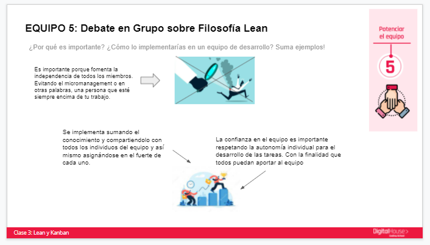

Sobre la materia
Este es un taller donde desarrollamos dinámicas para adquirir las habilidades metodológicas necesarias para el desarrollo de software; e introducir a los alumnos en los marcos de trabajo más usados en el área laboral de desarrollo.
Proyectos de Metodología de Trabajo
¿Qué es el Mindset?

Principios Lean y Kanban
Características de las metodologías ágiles en empresas

Flujo de trabajo en una pizzería con Kanban